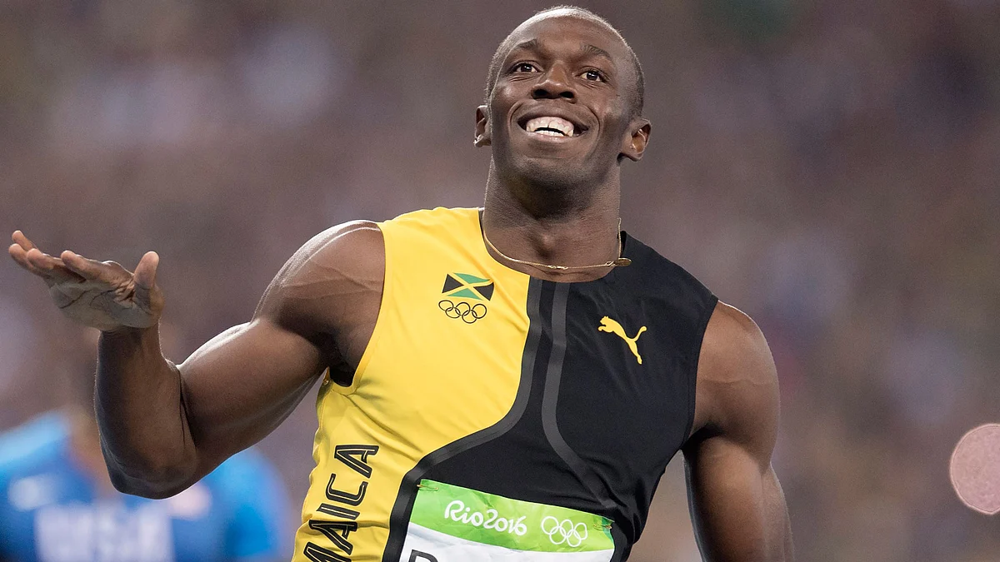
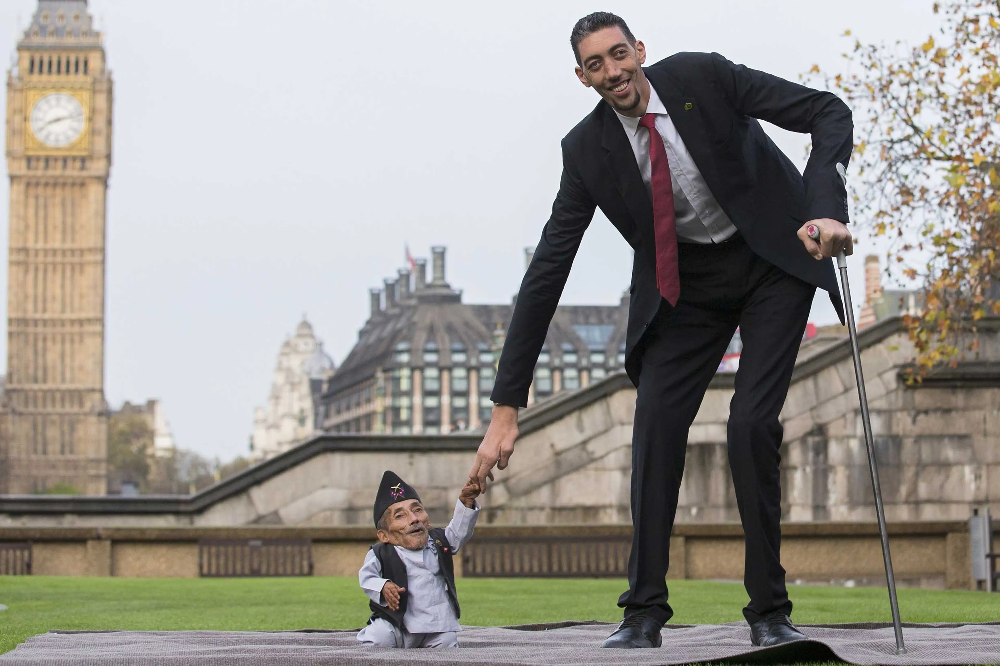

Unusual facts
The world is full of amazing people who achieve the most unusual, most extreme, and most impressive records. These facts show how far human
ability and creativity can go.
One of the most famous records is held by Usain Bolt, who is known as the fastest man in the world. His speed is still higher than most
athletes in history, making his achievement one of the greatest in sports.
Another incredible record belongs to Sultan Kösen, who is the tallest living man in the world. His height makes him more noticeable
than anyone around him, and his case is one of the rarest physical conditions.
In contrast, Chandra Bahadur Dangi was the shortest man ever recorded. His height was lower than almost any other adult in history,
showing the widest difference in human size.
There are also very unusual records. For example, some people have grown the longest fingernails in the world, which are longer
than any natural nails ever recorded. Others have completed the most difficult physical challenges, such as running long distances without rest.
Animals also appear in world records. The cheetah is the fastest land animal, while the blue whale is the largest animal on Earth,
much bigger than any dinosaur known today.
These records show that people and nature can reach the highest levels of performance and uniqueness. Every year, new records are
broken, and achievements become more extreme and more surprising than before.